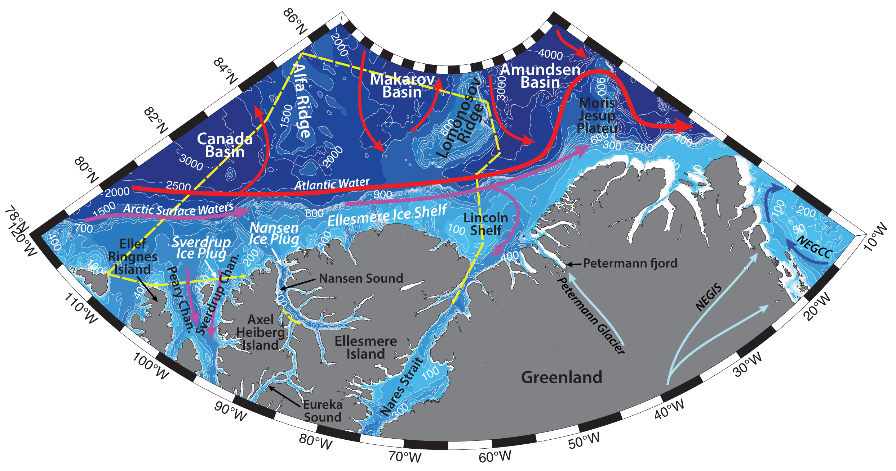

Schematic water circulation patterns and geographical place names in the northern Ellesmere and Greenland region. Adopted from Bailey (1957), Michel et al. (2006), Anderson and Macdonald (2015), Rudels (2019). Dashed yellow line marks the studied region.
Hydrography of the region is determined by the topography of the shelf and the Arctic Basin, sea ice and ice shelves, freshwater and ice runoff from the Ellesmere Island, atmospheric forcing and circulation of the Arctic Ocean water masses, as well as Transpolar Drift.
Large scale atmospheric forcing dominates the pressure field and govern the winds across the Arctic. Over the Canada Basin, the Beaufort Gyre and the Transpolar Drift largely influence the general circulation of the surface waters and sea ice. Predominantly anticyclonic atmospheric circulation over the Amerasian Basin creates a convergence and accumulation of the surface layer water in the Canada Basin, the Beaufort Gyre, and the resulting pressure field and geostrophic circulation extends at least down to 300–400 m depth (Rudels, 2019). Transpolar Drift advects sea ice across the Arctic Basin to the Fram Strait with mean speeds can be about ~10 km per day (e.g. Hunkins, 1990).
As such, fresh and cold Arctic Surface Water (or Polar Surface Water), formed by the river runoff and ice melt and comprising Polar Mixed Layer – PML, gets involved into the anticyclonic circulation centered over the Beaufort gyre, or joins the Transpolar Drift. The general flow of the Arctic Surface Water in the studied region is southwards, towards the Canadian Archipelago (Rudels, 2019).
Surface mixed layer is underlaid by a halocline layer, produced during freezing and salinization of the water column (e.g. Aagaard et al., 1981; Shimada et al., 2005; Rudels, 2019). Cold and saline waters are generally advected from the shelf; Pacific Winter and Summer waters also contribute to the upper halocline in the Canada Basin. Halocline layer prevents bottom melting of the ice cover from the Atlantic Water.
Deeper currents in the Arctic are in general steered by topography of the basin, comprising a large-scale cyclonic boundary current system (see the map; e.g. Rudels, 2019). After circulating counterclockwise along topographic slopes in the Arctic Ocean, warm Atlantic waters exit the Basin through the western side of the Fram Strait (with East Greenland Current). In the Canada Basin Atlantic Water (AW; T > 0 °C, 𝑆 > 33.64 psu) is advected between 300 and 900 m. It is usually traced by a core of maximum subsurface temperature, and is defined as water with temperature above 0 C (e.g. Munchow et al., 2016; Rudels, 2019). However, as AW is modified and cooled on its long way from the Fram Strait and Eurasian Basin towards Pacific Arctic, in some studies (e.g. Nikolopoulos et al., 2009; Brugler et al., 2014; Pisareva et al., 2015) the boundary between the Pacific and Atlantic waters is taken as the maximum Ertel potential vorticity, so that AW is defined as water with temperatures higher than -1.26 °C. In the studied region AW is advected eastwards along the continental shelf, as well as circulates cyclonically in the deeper parts of Canada, Makarov and Amundsen Basins.
Atlantic Water, that pass the Lincoln Shelf, can enter the Nares Strait by passing over a 290 m deep sill (AW from the Baffin Bay to the south of Nares Strait are thought to not be able to pass the southern sill of 220 m). While at the base of the ice shelf waters are around -2.2 ºC (the temperature of the freezing point), the temperatures of the Atlantic Water, recirculated in the Arctic Basin, can be around 0.3 ºC and higher in this region (e.g. Munchow et al., 2016).
Dense deep waters, underlaying the Atlantic layer, are advected from the Fram Strait and fed by the brine enriched plumes sinking from the shelves. In general, the deep layer is homogenous, except for the warmer and well mixed bottom layer in some regions, caused by the geothermal heating and stirring by convection from below. Due to the presence of ridges in the Basin, there is little exchange of the deep waters between the Amerasian and Eurasian basins. As such, deep waters of the Amerasian Basin are warmer and saltier, compared to the waters of Eurasian Basin. Eddy formation and shedding in all the mentioned water masses enhance vertical mixing of the water column, especially in the shelf regions (Rudels, 2019).
Ice shelves of Ellesmere Island and Greenland contribute ice, freshwater, and terrigene material to the coastal waters of the shelf. Ellesmere Island is a large mountainous island in the Canadian Arctic Archipelago, covered with large ice fields and caps (e.g. Manson Icefield of 6,200 km2, Sydkap of 3,700 km2, Agassiz Ice Cap of 21,500 km2, the Northern Ellesmere icefields of 24,400 km2, Prince of Wales Icefield of 20,700 km2, Wolken et al., 2009). The inflow of glacier ice together with surface ice accumulation form the last remaining ice shelves in Canada (Serson, Petersen, Milne, Ayles and Ward Hunt ice shelves) along the northern coast of Ellesmere Island (Copland et al., 2007). These ice shelves began to form around 4500 years ago and in the late 1800s and early 1900s they were supposedly extending along the entire coast of N. Ellesmere Island (~500 km). Over the period 1906–82, there has been a 90% reduction in the areal extent of ice shelves along the entire coastline, so that by the 2004 just the major ones survived, with the estimated area of ~1043 km2 (Copland et al., 2007).
Nansen Sound separates Axel Heiberg Island from the Ellesmere Island and connects the Norwegian Bay with the Arctic Ocean via the Eureka Sound. Hydrography of the Nansen Sound and its fjords generally reflects hydrography of the nearby waters of the northern Canadian Arctic Archipelago coast of the Arctic Ocean. For example, Atlantic Water (0<T<2ºC, 34.2<S<34.5) was found to reside beneath 200 m depth in the Nansen Sound and surrounding fjords, identifiable by temperatures increasing with depth and by a change of slope in salinity profiles (e.g. Michel et al., 2006; Ford and Hattersley-Smith, 1965). The top part of the water column in the region is occupied by Arctic Surface Water, and is influenced by the freshwater runoff from the coast as well. Surface layer can have wide range of temperatures (T can reach 5 – 6 ºC) and salinities (S > 34), amongst other factors caused by the melting and freezing of the extensive ice cover, but nevertheless this layer is generally rather cold and fresh (-1.8<T<0ºC, S from <31 up to 34.4; Muench, 1970; Bailey, 1957), with observed thickness from 20 to 75 m (but can sometimes be observed down to 300 m, e.g. in Baffin Bay). Winter cooling and ice freeze-up can cause salinization and densification of the water, and subsequent formation of the denser water mass, which sinks to the bottom.
In the Canadian Arctic Archipelago, sea ice is found all year round, and is generally land-fast due to the narrow width of the channels. Minimum ice cover is observed in September, freeze-up – in late December. Multi-year ice plugs (agglomerations of ice of different ages and thickness) are known to block the northern channels of the CAA, including Nansen Sound and Sverdrup Channel. Recent reductions of the sea ice cover across the Arctic Ocean and in the CAA can be reflected in the absence of the ice plugs as well (e.g. due to atmospheric forcing and warm ocean conditions), which in turn could allow enhanced penetration of Arctic Ocean multi-year ice into the CAA, e.g. into the Nansen and Eureka sounds, Sverdrup and Peary Channels (Atkinson et al., 2006).